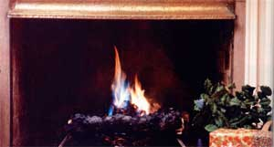

The warm blaze of a fireplace has always been a special part of the holiday season ... especially if you have some ocean driftwood (which burns with blue flames) or aged apple wood (which makes a rainbow fire) to mix in with the rest of your logs.
And if you don't happen to have access to an ocean beach or a stack of disjointed apple trees in your back yard? No problem. You can still add lively reds, blues, greens, purples, and oranges to the more usual yellows of this season's fireplace blazes. All you'll need is a little powdered boric acid (bright green), copper sulfate (green), copper chloride (blue), strontium chloride (red), lithium chloride (crimson), potassium chloride (purple), calcium chloride (orange), baking soda (yelloworange), or ordinary table salt (yellow).
Note that-except for the very common boric acid and table salt-all the inexpensive powdered chemicals listed above are either chlorides or sulfates. Do not purchase nitrates or chlorates. Chlorides and sulfates are what you want. Any wellstocked drugstore should be able to furnish you with a pound or so of most of the specified substances. If not, try one of the chemical supply houses listed in the Yellow Pages of your telephone directory.
The chemicals specified here are not at all dangerous to work with or to burn, when they're handled properly. Still, most of us know that even the most common substance on the list-table salt-can "burn" if rubbed into the eyes or on a fresh cut. A few precautions, then, are in order:
Store all your prismatic fireplace chemicals in tightly sealed glass or plastic containers in a dry and well-ventilated place that is out of the reach of both children and pets. Prepare only as much of each coloring agent as you need at one time, wear rubber gloves when you work, and do that work outdoors. Burn all treated wood, paper, etc., only after the blaze in your fireplace has a good start and has developed a healthy draft.
And if these "do's" and "don'ts" sound foreboding ... relax. The chemicals recommended in this article are actually relatively harmless. It's just that it's always better, as the old saying goes, "to be safe than sorry".
The best way to add multiple colors to your holiday fires is by soaking wood chips, kindling, corncobs, and other types of "fire starting" materials in a one-to-three solution of any of your chemicals. That is: Mix one cup of a coloring substance with three cups of water and stir the solution thoroughly until the powder has completely dissolved. Then again, there's nothing magic about this one-to-three formula. You can thin it, if you like, to as little as one cup of powder to a gallon of water and the only difference you'll note is that the hues of the flames will be somewhat less intense when you burn your treated materials.
Do your mixing and soaking in a plastic garbage can. Larger chunks of wood can be stood on end and wedged in tightly enough to hold themselves almost entire ly under the coloring solution. Corncobs, kindling, wood chips, and other small burnables are easier to handle when dumped into a porous bag and held down with a rock or brick.
This is a good project for "found" materials, too. Old packing crates, discards from the lumberyard, leftovers from construction sites, and other scavenged burnables are all likely candidates. I especially enjoy rolling old newspapers into tight rolls, tying each bundle with a stout cord, and then soaking these homemade "logs" in one solution or another. And pinecones-which look good in the fireplace even before they're burned-are especial ly fun.
Soak chunks of wood for about 24 hours, rolled newspapers until they're completely saturated, and pinecones and other smaller items for five to 10 minutes. Then remove them from the coloring agent, lot them drain over the garbage can, and place them on sheets of wax paper or several layers of newspaper to dry (these "drying" papers, of course, can later be rolled up and burned, too).
And that's all there is to it ... except for the fun you'll have at your next Thanksgiving or Christmas get-together or just on those long, cold winter evenings when the family is clustered around the fire. Expect some "oohing" and "aahing" every time you throw a fresh newspaper log, some wood chips, or a few pinecones on the blaze ... and a different colored set of flames goes up the chimney!
|
 |
|
|